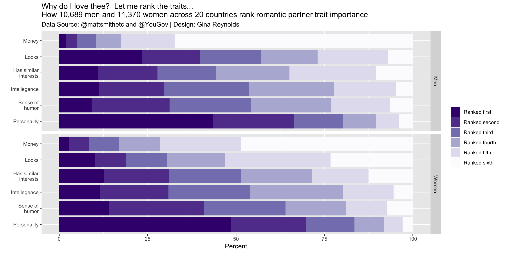

Chapter 6 Traits
A random sample from the data set:
| Gender | Question_short | Rank (text) | Rank (number) | n | Percent |
|---|---|---|---|---|---|
| Women | Personality | Ranked fifth | 5 | 608.01 | 5.331190 |
| Women | Personality | Ranked fourth | 4 | 945.87 | 8.293635 |
| Men | Has similar interests | Ranked fifth | 5 | 2609.06 | 24.430224 |
| Women | Sense of humor | Ranked first | 1 | 1595.04 | 14.024450 |
| Women | Has similar interests | Ranked first | 1 | 1442.49 | 12.655053 |
ggplot(data = world) +
aes(x = Question_short_wrap) +
aes(y = Percent) +
aes(fill = `Rank (text)`) +
facet_grid(Gender ~ .) +
geom_col() +
coord_flip() +
scale_fill_manual(
values = colorRampPalette(RColorBrewer::brewer.pal(9, "Purples"))(6)[1:6],
guide = guide_legend(reverse = TRUE)
) +
labs(fill = "") +
xlab("") +
labs(title = "Why do I love thee? Let me rank the traits... \nHow 10,689 men and 11,370 women across 20 countries rank romantic partner trait importance") +
labs(subtitle = "Data Source: @mattsmithetc and @YouGov | Design: Gina Reynolds") 